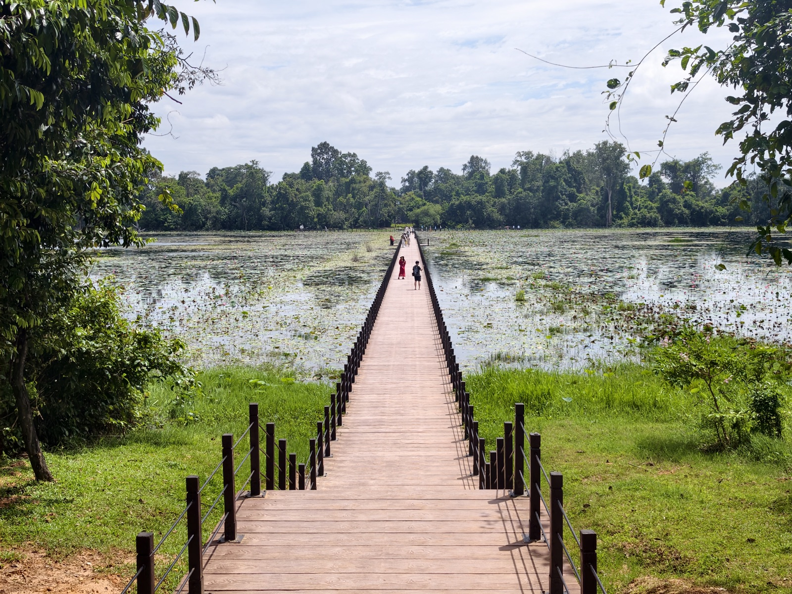
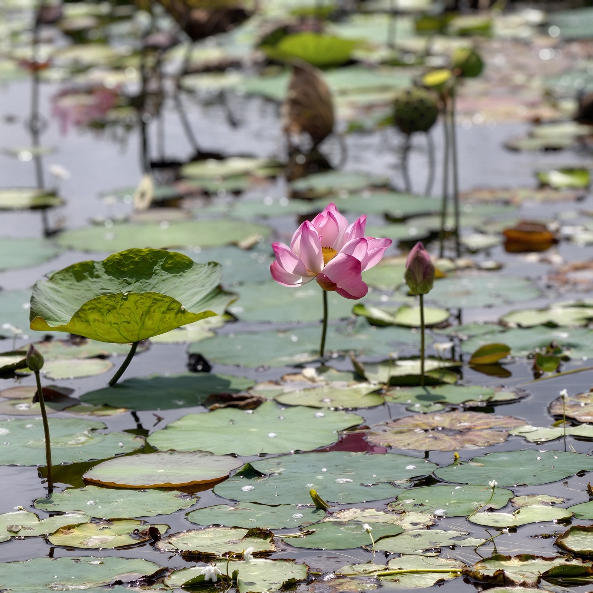
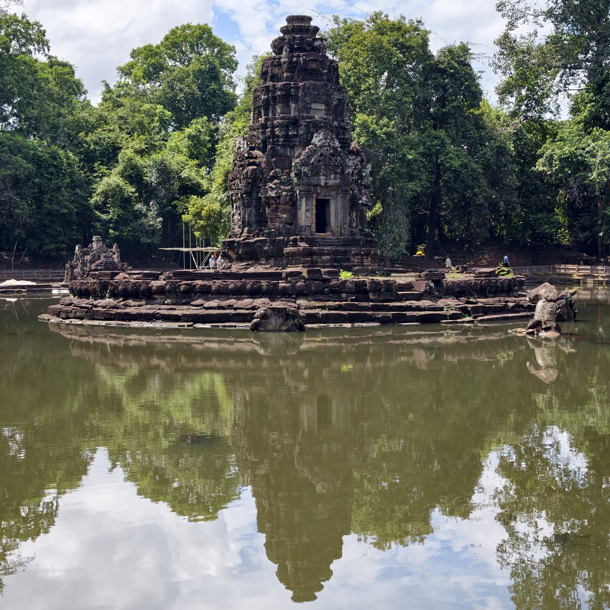
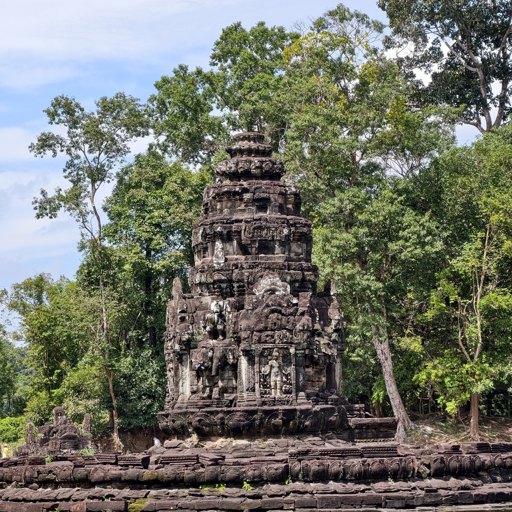

蟠蛇殿
蟠蛇殿在圣剑寺东方，与它同一条轴线，是圣剑寺水库「阇耶塔塔迦湖」的湖心庙，碑铭里称作「胜利之池」，十二世纪末阇耶跋摩七世所建。格局在吴哥建筑中独一无二：五座方形水池，中央大池环着一座圆岛，岛上立塔；水满时从中央池注入四座小池，四个出水口分别作人面、狮首、马面、象首。两条那伽环绕圆岛，头在东边相对，尾巴在西侧纠缠——「蟠蛇」由此得名。周达观在《真腊风土记》里记过它：「北池在城北五里，中有金方塔一座。」
池水相传有疗效，有人把蟠蛇殿算作阇耶跋摩七世修建的医院之一。柬人治病本就有入水浸浴的习俗，周达观也记了：「国人寻常有病，多是入水浸浴及频频洗头，便自痊可。」



